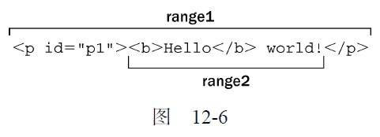
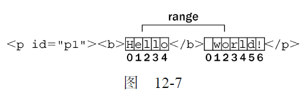
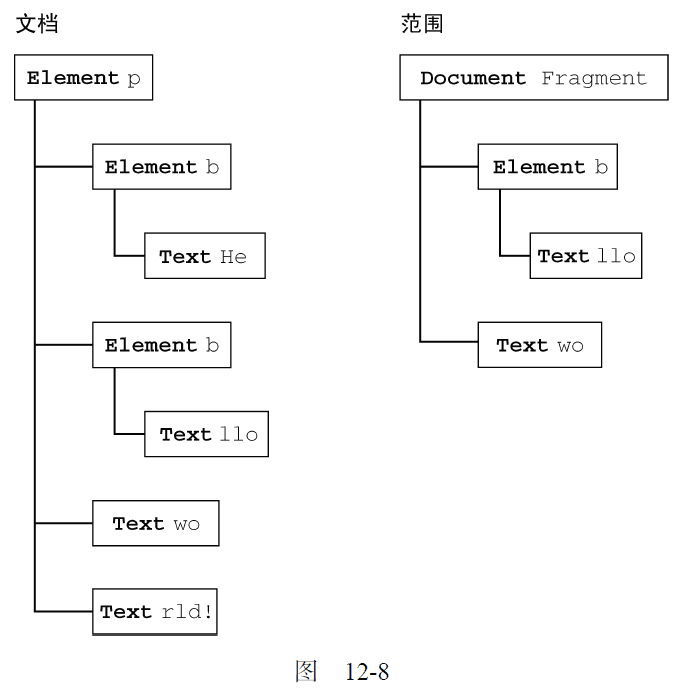
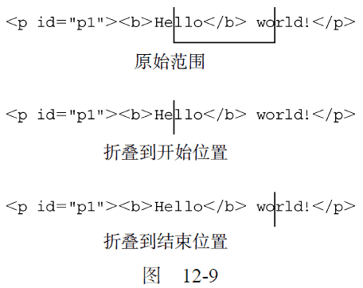
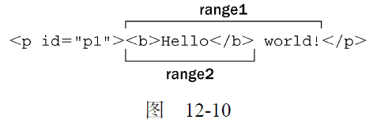

12.4.1 DOM中的范围
DOM2 级在Document 类型中定义了createRange()方法。在兼容DOM 的浏览器中，这个方法属于document 对象。使用hasFeature()或者直接检测该方法，都可以确定浏览器是否支持范围。
var supportsRange = document.implementation.hasFeature("Range", "2.0");
var alsoSupportsRange = (typeof document.createRange == "function");
如果浏览器支持范围，那么就可以使用createRange()来创建DOM范围，如下所示：
var range = document.createRange();
与节点类似，新创建的范围也直接与创建它的文档关联在一起，不能用于其他文档。创建了范围之后，接下来就可以使用它在后台选择文档中的特定部分。而创建范围并设置了其位置之后，还可以针对范围的内容执行很多种操作，从而实现对底层DOM 树的更精细的控制。
每个范围由一个Range 类型的实例表示，这个实例拥有很多属性和方法。下列属性提供了当前范围在文档中的位置信息。
-
startContainer：包含范围起点的节点（即选区中第一个节点的父节点）。
-
startOffset：范围在startContainer 中起点的偏移量。如果startContainer 是文本节点、注释节点或CDATA 节点，那么startOffset 就是范围起点之前跳过的字符数量。否则，startOffset 就是范围中第一个子节点的索引。
-
endContainer：包含范围终点的节点（即选区中最后一个节点的父节点）。
-
endOffset：范围在endContainer 中终点的偏移量（与startOffset 遵循相同的取值规则）。
-
commonAncestorContainer：startContainer 和endContainer 共同的祖先节点在文档树中位置最深的那个。
在把范围放到文档中特定的位置时，这些属性都会被赋值。
1. 用DOM 范围实现简单选择
要使用范围来选择文档中的一部分，最简的方式就是使用selectNode()或selectNodeContents()。
这两个方法都接受一个参数，即一个DOM 节点，然后使用该节点中的信息来填充范围。其中，selectNode()方法选择整个节点，包括其子节点；而selectNodeContents()方法则只选择节点的子节点。以下面的HTML 代码为例。
<!DOCTYPE html>
<html>
<body>
<p id="p1"><b>Hello</b> world!</p>
</body>
</html>
我们可以使用下列代码来创建范围：
var range1 = document.createRange();
range2 = document.createRange();
p1 = document.getElementById("p1");
range1.selectNode(p1);
range2.selectNodeContents(p1);
运行一下
这里创建的两个范围包含文档中不同的部分：rang1 包含<p/>元素及其所有子元素，而rang2 包含<b/>元素、文本节点"Hello"和文本节点"world!"（如图12-6 所示）。

在调用selectNode()时，startContainer、endContainer 和commonAncestorContainer都等于传入节点的父节点，也就是这个例子中的document.body。而startOffset 属性等于给定节点在其父节点的childNodes 集合中的索引（在这个例子中是1——因为兼容DOM的浏览器将空格算作一个文本节点），endOffset 等于startOffset 加1（因为只选择了一个节点）。
在调用selectNodeContents()时，startContainer、endContainer 和commonAncestorContainer等于传入的节点，即这个例子中的<p>元素。而startOffset 属性始终等于0，因为范围从给定节点的第一个子节点开始。最后，endOffset 等于子节点的数量（node.childNodes.length），在这个例子中是2。
此外，为了更精细地控制将哪些节点包含在范围中，还可以使用下列方法。
-
setStartBefore(refNode)：将范围的起点设置在refNode 之前，因此refNode 也就是范围选区中的第一个子节点。同时会将startContainer 属性设置为refNode.parentNode，将startOffset 属性设置为refNode 在其父节点的childNodes 集合中的索引。
-
setStartAfter(refNode)：将范围的起点设置在refNode 之后，因此refNode 也就不在范围之内了，其下一个同辈节点才是范围选区中的第一个子节点。同时会将startContainer 属性设置为refNode.parentNode，将startOffset 属性设置为refNode 在其父节点的childNodes 集合中的索引加1。
-
setEndBefore(refNode)：将范围的终点设置在refNode 之前，因此refNode 也就不在范围之内了，其上一个同辈节点才是范围选区中的最后一个子节点。同时会将endContainer 属性设置为refNode.parentNode，将endOffset 属性设置为refNode 在其父节点的childNodes集合中的索引。
-
setEndAfter(refNode)：将范围的终点设置在refNode 之后，因此refNode 也就是范围选区中的最后一个子节点。同时会将endContainer 属性设置为refNode.parentNode，将endOffset 属性设置为refNode 在其父节点的childNodes 集合中的索引加1。
在调用这些方法时，所有属性都会自动为你设置好。不过，要想创建复杂的范围选区，也可以直接指定这些属性的值。
2. 用DOM 范围实现复杂选择
要创建复杂的范围就得使用setStart()和setEnd()方法。这两个方法都接受两个参数：一个参照节点和一个偏移量值。对setStart()来说，参照节点会变成startContainer，而偏移量值会变成startOffset。对于setEnd()来说，参照节点会变成endContainer，而偏移量值会变成endOffset。
可以使用这两个方法来模仿selectNode()和selectNodeContents()。来看下面的例子：
var range1 = document.createRange();
range2 = document.createRange();
p1 = document.getElementById("p1");
p1Index = -1;
i,
len;
for (i = 0, len = p1.parentNode.childNodes.length; i < len; i++) {
if (p1.parentNode.childNodes[i] == p1) {
p1Index = i;
break;
}
}
range1.setStart(p1.parentNode, p1Index);
range1.setEnd(p1.parentNode, p1Index + 1);
range2.setStart(p1, 0);
range2.setEnd(p1, p1.childNodes.length);
运行一下
显然，要选择这个节点（使用range1），就必须确定当前节点（p1）在其父节点的childNodes集合中的索引。而要选择这个节点的内容（使用range2），也不必计算什么；只要通过setStart()和setEnd()设置默认值即可。模仿selectNode()和selectNodeContents()并不是setStart()和setEnd()的主要用途，它们更胜一筹的地方在于能够选择节点的一部分。
假设你只想选择前面HTML 示例代码中从"Hello"的"llo"到"world!"的"o"——很容易做到。
第一步是取得所有节点的引用，如下面的例子所示：
var p1 = document.getElementById("p1");
helloNode = p1.firstChild.firstChild;
worldNode = p1.lastChild;
运行一下
实际上，"Hello"文本节点是<p>元素的孙子节点，因为它本身是<b>元素的一个子节点。因此，p1.firstChild 取得的是<b>，而p1.firstChild.firstChild 取得的才是这个文本节点。"world!"文本节点是<p>元素的第二个子节点（也是最后一个子节点），因此可以使用p1.lastChild 取得该节点。然后，必须在创建范围时指定相应的起点和终点，如下面的例子所示。
var range = document.createRange();
range.setStart(helloNode, 2);
rang e.setEnd(worldNode, 3);
运行一下
因为这个范围的选区应该从"Hello"中"e"的后面开始，所以在setStart()中传入helloNode的同时，传入了偏移量2（即"e"的下一个位置；"H"的位置是0）。设置选区的终点时，在setEnd()中传入worldNode 的同时传入了偏移量3，表示选区之外的第一个字符的位置，这个字符是"r"，它的位置是3（位置0 上还有一个空格）。如图12-7 所示。

由于helloNode 和worldNode 都是文本节点，因此它们分别变成了新建范围的startContainer和endContainer。此时startOffset 和endOffset 分别用以确定两个节点所包含的文本中的位置，而不是用以确定子节点的位置（就像传入的参数为元素节点时那样）。此时的commonAncestor-Container 是<p>元素，也就是同时包含这两个节点的第一个祖先元素。
当然，仅仅是选择了文档中的某一部分用处并不大。但重要的是，选择之后才可以对选区进行操作。
3. 操作DOM 范围中的内容
在创建范围时 ，内部会为这个范围创建一个文档片段，范围所属的全部节点都被添加到了这个文档片段中。为了创建这个文档片段，范围内容的格式必须正确有效。在前面的例子中，我们创建的选区分别开始和结束于两个文本节点的内部，因此不能算是格式良好的DOM结构，也就无法通过DOM来表示。但是，范围知道自身缺少哪些开标签和闭标签，它能够重新构建有效的DOM结构以便我们对其进行操作。
对于前面的例子而言，范围经过计算知道选区中缺少一个开始的<b>标签，因此就会在后台动态加入一个该标签，同时还会在前面加入一个表示结束的</b>标签以结束"He"。于是，修改后的DOM 就变成了如下所示。
<p><b>He</b><b>llo</b> world!</p>
另外，文本节点"world!"也被拆分为两个文本节点，一个包含"wo"，另一个包含"rld!"。最终的DOM 树如图12-8 所示，右侧是表示范围的文档片段的内容。像这样创建了范围之后，就可以使用各种方法对范围的内容进行操作了（注意，表示范围的内部文档片段中的所有节点，都只是指向文档中相应节点的指针）。
第一个方法，也是最容易理解的方法，就是deleteContents()。这个方法能够从文档中删除范围所包含的内容。例如：
var p1 = document.getElementById("p1");
helloNode = p1.firstChild.firstChild;
worldNode = p1.lastChild;
range = document.createRange();
range.setStart(helloNode, 2);
range.setEnd(worldNode, 3);
range.deleteContents();
运行一下

执行以上代码后，页面中会显示如下HTML 代码：
<p><b>He</b>rld!</p>
由于范围选区在修改底层DOM 结构时能够保证格式良好，因此即使内容被删除了，最终的DOM结构依旧是格式良好的。
与deleteContents()方法相似，extractContents()也会从文档中移除范围选区。但这两个方法的区别在于，extractContents()会返回范围的文档片段。利用这个返回的值，可以将范围的内容插入到文档中的其他地方。如下面的例子所示：
var p1 = document.getElementById("p1");
helloNode = p1.firstChild.firstChild;
worldNode = p1.lastChild;
range = document.createRange();
range.setStart(helloNode, 2);
range.setEnd(worldNode, 3);
var fragment = range.extractContents();
p1.parentNode.appendChild(fragment);
运行一下
在这个例子中，我们将提取出来的文档片段添加到了文档<body>元素的末尾。（记住，在将文档片段传入appendChild()方法中时，添加到文档中的只是片段的子节点，而非片段本身。）结果得到如下HTML 代码：
<p><b>He</b>rld!</p>
<b>llo</b> wo
还一种做法，即使用cloneContents()创建范围对象的一个副本，然后在文档的其他地方插入该副本。如下面的例子所示：
var p1 = document.getElementById("p1"),
helloNode = p1.firstChild.firstChild,
worldNode = p1.lastChild,
range = document.createRange();
range.setStart(helloNode, 2);
range.setEnd(worldNode, 3);
var fragment = range.cloneContents();
p1.parentNode.appendChild(fragment);
运行一下
这个方法与extractContents()非常类似，因为它们都返回文档片段。它们的主要区别在于，cloneContents()返回的文档片段包含的是范围中节点的副本，而不是实际的节点。执行上面的操作后，页面中的HTML 代码应该如下所示：
<p><b>Hello</b> world!</p>
<b>llo</b> wo
有一点请读者注意，那就是在调用上面介绍的方法之前，拆分的节点并不会产生格式良好的文档片段。换句话说，原始的HTML 在DOM 被修改之前会始终保持不变。
4. 插入DOM 范围中的内容
利用范围，可以删除或复制内容，还可以像前面介绍的那样操作范围中的内容。使用insertNode()方法可以向范围选区的开始处插入一个节点。假设我们想在前面例子中的HTML 前面插入以下HTML代码：
<span style="color: red">Inserted text</span>
那么，就可以使用下列代码：
var p1 = document.getElementById("p1");
helloNode = p1.firstChild.firstChild;
worldNode = p1.lastChild;
range = document.createRange();
range.setStart(helloNode, 2);
range.setEnd(worldNode, 3);
var span = document.createElement("span");
span.style.color = "red";
span.appendChild(document.createTextNode("Inserted text"));
range.insertNode(span);
运行一下
运行以上JavaScript 代码，就会得到如下HTML 代码：
<p id="p1"><b>He<span style="color: red">Inserted text</span>llo</b> world</p>
注意，<span>正好被插入到了"Hello"中的"llo"前面，而该位置就是范围选区的开始位置。还要注意的是，由于这里没有使用上一节介绍的方法，结果原始的HTML 并没有添加或删除<b>元素。使用这种技术可以插入一些帮助提示信息，例如在打开新窗口的链接旁边插入一幅图像。
除了向范围内部插入内容之外，还可以环绕范围插入内容，此时就要使用surroundContents()方法。这个方法接受一个参数，即环绕范围内容的节点。在环绕范围插入内容时，后台会执行下列步骤。
(1) 提取出范围中的内容（类似执行extractContent()）；
(2) 将给定节点插入到文档中原来范围所在的位置上；
(3) 将文档片段的内容添加到给定节点中。
可以使用这种技术来突出显示网页中的某些词句，例如下列代码：
var p1 = document.getElementById("p1");
helloNode = p1.firstChild.firstChild;
worldNode = p1.lastChild;
range = document.createRange();
range.selectNode(helloNode);
var span = document.createElement("span");
span.style.backgroundColor = "yellow";
range.surroundContents(span);
运行一下
会给范围选区加上一个黄色的背景。得到的HTML 代码如下所示：
<p><b><span style="background-color:yellow">Hello</span></b> world!</p>
为了插入<span>，范围必须包含整个DOM 选区（不能仅仅包含选中的DOM 节点）。
5. 折叠DOM 范围
所谓折叠范围，就是指范围中未选择文档的任何部分。可以用文本框来描述折叠范围的过程。假设文本框中有一行文本，你用鼠标选择了其中一个完整的单词。然后，你单击鼠标左键，选区消失，而光标则落在了其中两个字母之间。同样，在折叠范围时，其位置会落在文档中的两个部分之间，可能是范围选区的开始位置，也可能是结束位置。图12-9 展示了折叠范围时发生的情形。
使用collapse()方法来折叠范围，这个方法接受一个参数，一个布尔值，表示要折叠到范围的哪一端。参数true 表示折叠到范围的起点，参数false 表示折叠到范围的终点。要确定范围已经折叠完毕，可以检查collapsed 属性，如下所示：
range.collapse(true); //折叠到起点
alert(range.collapsed); //输出true

检测某个范围是否处于折叠状态，可以帮我们确定范围中的两个节点是否紧密相邻。例如，对于下面的HTML 代码：
<p id="p1">Paragraph 1</p><p id="p2">Paragraph 2</p>
如果我们不知道其实际构成（比如说，这行代码是动态生成的），那么可以像下面这样创建一个范围。
var p1 = document.getElementById("p1"),
p2 = document.getElementById("p2"),
range = document.createRange();
range.setStartAfter(p1);
range.setStartBefore(p2);
alert(range.collapsed); //输出true
在这个例子中，新创建的范围是折叠的，因为p1 的后面和p2 的前面什么也没有。
6. 比较DOM 范围
在有多个范围的情况下，可以使用compareBoundaryPoints()方法来确定这些范围是否有公共的边界（起点或终点）。这个方法接受两个参数：表示比较方式的常量值和要比较的范围。表示比较方式的常量值如下所示。
-
Range.START_TO_START(0)：比较第一个范围和第二个范围的起点；
-
Range.START_TO_END(1)：比较第一个范围的起点和第二个范围的终点；
-
Range.END_TO_END(2)：比较第一个范围和第二个范围的终点；
-
Range.END_TO_START(3)：比较第一个范围的终点和第一个范围的起点。
compareBoundaryPoints()方法可能的返回值如下：如果第一个范围中的点位于第二个范围中的点之前，返回-1；如果两个点相等，返回0；如果第一个范围中的点位于第二个范围中的点之后，返回1。来看下面的例子。
var range1 = document.createRange();
var range2 = document.createRange();
var p1 = document.getElementById("p1");
range1.selectNodeContents(p1);
range2.selectNodeContents(p1);
range2.setEndBefore(p1.lastChild);
alert(range1.compareBoundaryPoints(Range.START_TO_START, range2)); //0
alert(range1.compareBoundaryPoints(Range.END_TO_END, range2)); //1
运行一下
原始范围
折叠到开始位置
折叠到结束位置
在这个例子中，两个范围的起点实际上是相同的，因为它们的起点都是由selectNodeContents()方法设置的默认值来指定的。因此，第一次比较返回0。但是，range2 的终点由于调用setEndBefore()已经改变了，结果是range1 的终点位于range2 的终点后面（见图12-10），因此第二次比较返回1。

7. 复制DOM 范围
可以使用cloneRange()方法复制范围。这个方法会创建调用它的范围的一个副本。
var newRange = range.cloneRange();
新创建的范围与原来的范围包含相同的属性，而修改它的端点不会影响原来的范围。
8. 清理DOM 范围
在使用完范围之后，最好是调用detach()方法，以便从创建范围的文档中分离出该范围。调用detach()之后，就可以放心地解除对范围的引用，从而让垃圾回收机制回收其内存了。来看下面的例子。
range.detach(); //从文档中分离
range = null; //解除引用
在使用范围的最后再执行这两个步骤是我们推荐的方式。一旦分离范围，就不能再恢复使用了。